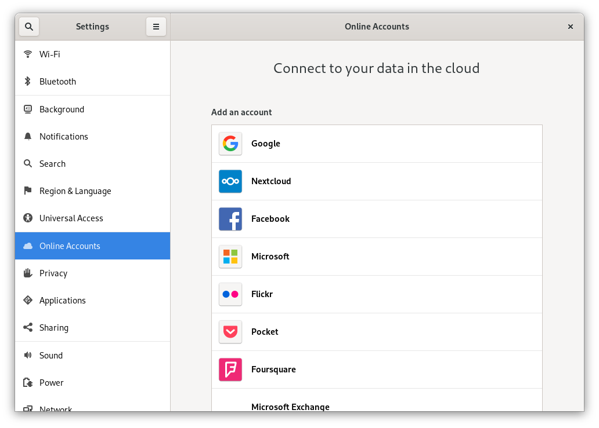
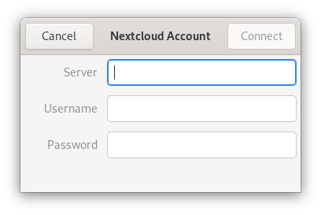
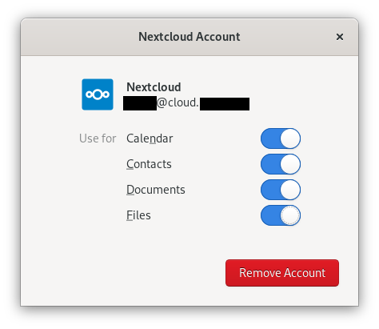

Synchronizace s GNOME desktopem
GNOME desktop má vestavěnou podporu pro kalendář, kontakty a úkoly z Nextcloud, které je možné zobrazovat v Evolution PIM nebo aplikacích Kalendář, Úkoly a Kontakty. Stejně tak má podporu pro soubory, které se integrují do správce souborů Nautilus skrze protokol WebDAV. Druhé zmíněné funguje pouze v okamžiku, kdy je k dispozici síťové připojení.
Toto je možné udělat následováním těchto kroků:
V nastavení GNOME, otevřete Online účty.
Pod „Přidat účet“ vyberte
Nextcloud:

Zadejte URL adresu vámi využívaného serveru, uživatelské jméno a heslo. Pokud jste zapnuli dvoufázové ověřování, je třeba vytvořit heslo pro aplikaci / token, protože aplikace GNOME Účty online zatím nepodporuje Nextcloud webflow přihlášení. (Více viz):

In the next window, select which resources GNOME should access and press the cross in the top right to close:

Nextcloud úkoly, kalendáře a kontakty by nyní měly být viditelné v Evolution PIM, úkolech, kontaktech a kalendářích.
Soubory budou zobrazeny jako WebDAV prostředek ve správci souborů Nautilus (a také k dispozici v dialozích GNOME pro otevření/uložení souborů). Dokumenty by měly být integrovány do aplikace GNOME Dokumenty.
Všechny prostředky by také mělo jít vyhledat odkudkoli stisknutím klávesy Windows a zadáním vyhledávaného pojmu.